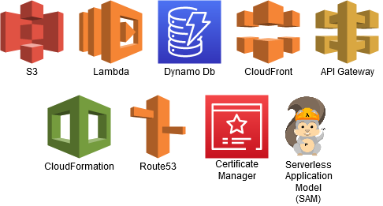
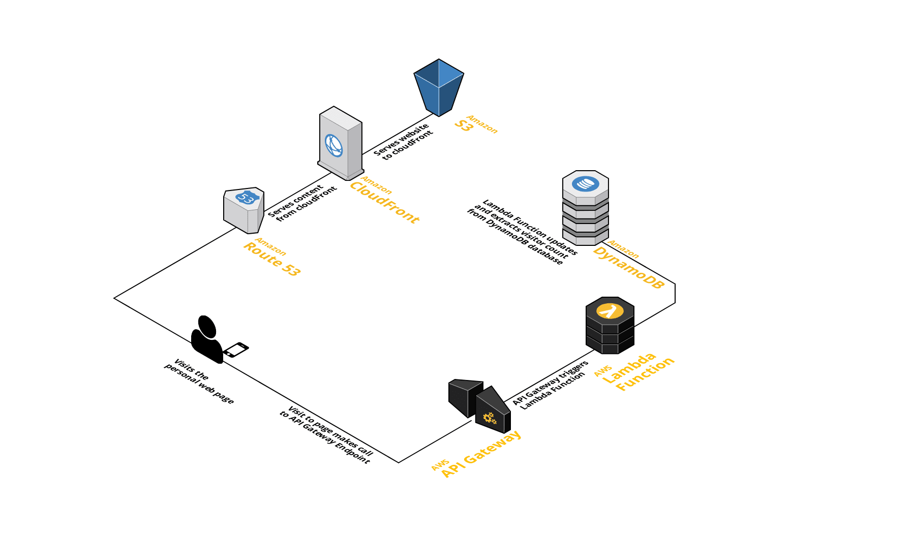
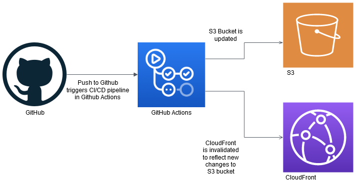
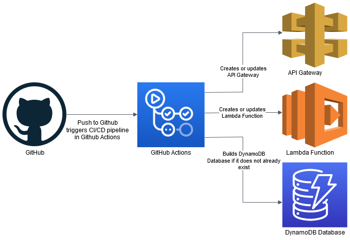

There is a lot of things that went into building my personal website. The site has both a front end and backend part of the website. The backend is mainly used to keep a visitor tracker, which can be found at the bottom of the homepage. Beyond the website itself, I also created a CI/CD pipelines, using github actions, for both the front end and back end of the webpage. The CI/CD feature both automates the building of the resources (if they do not already exist), verifying tests if they exists, and updating cloudfront when changes are pushed to the front end.
Some of the AWS technologies are listed below.
A general map of the user experience can be seen below:
In this post, I hope to go over in detail how all these pieces work together in delivering the website. In the end, it was a great experience using many AWS products for my personal website.
The first thing I did was build my website, which took a very short period of time. After that, I proceeded to push my code into a github repository to allow for a centralized location for me to have it saved and backed-up somewhere outside my computer.
After that, I pushed my code to an S3 bucket. This was a straightforward and easy process. To allow for the website to be publicly accessed, I allowed for “static website hosting” for the S3 bucket. I also made sure to have two S3 buckets, one that included the “www” and one that did not. The one that did not redirects the requests to the one that includes it and has the static website hosting.
From there, you simply allow getOjbects permissions via the “Bucket Policy editor”. And example of the template is below
INSERT IMAGE RIGHT HERE
After doing all this, the URL provided by S3 works and is publicly accessible via the internet. Great!
After setting up the above bucket, I wanted to make sure that it was associated with my DNS record.
The first step I took was to connect my DNS to Route53. The reason for this is because CloudFront requires this to work with ones domain.
To utilize the HTTPS feature, I had to have a DNS validation using the certificate manager service in AWS. Once the validation was completed, I was able to utilize HTTPS protocol on the S3 bucket. HTTPS is important as it allows traffic to be encrypted to the server. The feature is also important as some browser features require HTTPS.
After this, I set up CloudFront. CloudFront is an important technology that allows delivery of website and other communication to be faster. This is mainly because CloudFront servers can be closer to the users than where an S3 bucket server may be located. Ultimately, CloudFront acts as a cache for the S3 bucket. Once CloudFront is linked to the S3 bucket, it can speed up the users experience of using the website immidiately.
Also, CloudFront has an interesting feature where if you update the S3 bucket it is associated with, the change may not be reflected in the cloudfront until after 24 hours from the change. Ways to resolve this is to enable versioning OR to Invalidate the s3 objects. See the link below for more information.
Another feature I added to the website is a visitor counter. This was mainly created to utilize other features of AWS. One of the services used to keep track of this is DynamoDB.
For this, it was pretty straightforward. Initially I just set up the database manually through the console, later I utilized more automation (cloudformation) for setting up the table. I used provisioned settings to keep costs low and within the free tier. Due to low read and write capacity I expect with the table, I set both the read capacity units (RCU) and write capacity units (WCU) to 1. I also only used a partition key without a sort key due to the simple task I plan to utilize the table for. I have a single entry. That single entry is added to once for every visitor that comes to the website.
To make calls to the database, I am utilizing a lambda function. This is used alongside AWS Gateway to trigger the lambda function. The lambda function simply updates the count item and then gets the updated number counter from the dynamodb table. If the table happens to be empty, then the lambda function fills in the first entry.
A key thing that was needed with this was assigning a IAM role to the lambda function that allowed it to read and update from the dynamodb table. The key thing with this is to keep the permissions as low as possible and specific only to that table for security reasons.
The function was written in Python.
As was mentioned above, API gateway acts as a public endpoint that triggers the lambda to run. I made a REST API endpoint, and created a resource called “/viewcounter”. I made a GET method and simply called on the lambda function. Whenever the endpoint is hit, the lambda function is triggered, and a response comes back with the new updated viewCount.
One of the important things to make sure to do when coding is to have tests. For testing purposes, I included tests for the backend to test my Python lambda function. Since tests should not be utilizing actual reads or writes to the database, I mocked out the database using boto3. The purpose of mocking is to have a representation of the database and testing against it, without actually making calls the database itself.
After setting up the mocked database, I ran tests that verify the count update function both works if a visitor count entry already exists and also if one does not exists and the table is empty. This test not only comes in handy when I want to verify my function is working as expected locally, but it is also utilized in the CI/CD pipeline. The CI/CD pipeline for the backend includes a step for testing.
Initially, I did all the above in a manual way through the AWS console. However, AWS provides a service called cloudformation that allows you to spin up all the above services automatically. This can either be done automatically through a command terminal using the AWS CLI, or it can be done through a CI/CD pipeline. These files are stored in a YAML file. By utilizing this feature, it makes tearing down and setting up all the above feature quick and easy.
Although cloudformation does make things automated, I decided to take it further and include a CI/CD pipeline with my repositories. Both the front end and back end repositories have there own CI/CD pipelines. I set up my CI/CD pipeline utilizing github actions.
Below is an general image of what occurs for the front end CI/CD pipeline.
Below is an general image of what occurs for the back end CI/CD pipeline.
For the backend, the pipeline basically sets up the dependencies and runs tests for the code. If the tests fail, the CI/CD pipeline will stop and I will be emailed and notified of this. Also, the console will give a warning. If the tests pass, the CI/CD pipelines proceeds to do a SAM build and SAM deploy of all the serverless resources and lambda code. Once everything has been successfully completed, a completed job step will show as done.
For the front end, I basically push my code to the S3 bucket. I make sure that it is set up in a way that it always goes to the same bucket each time. After the bucket is updated, I have another step in the pipeline that invalidates cloudFront. Again, this is necessary to make sure that cloudFront has the most up to date changes from S3. Without this step, cloudFront would need to wait 24 hours before it is updated.
Using all of the above in building my website was enjoyable and helped me grow my skills further with using AWS technologies. From first setting up the S3 bucket, to setting up the serverless backend, and setting up the CI/CD pipeline, it was a great experience. Overall, I really enjoyed working with the above products, and hope to utilize more AWS products in possible future projects. As there is many more AWS technologies to make developing websites and other technology cost effective and efficient.